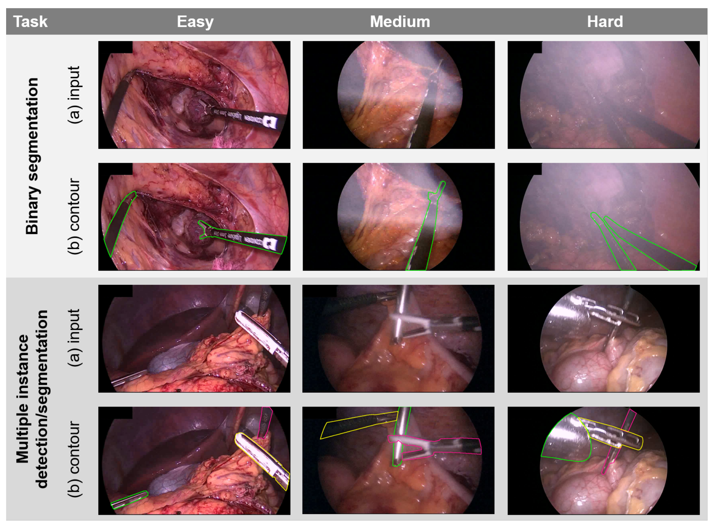
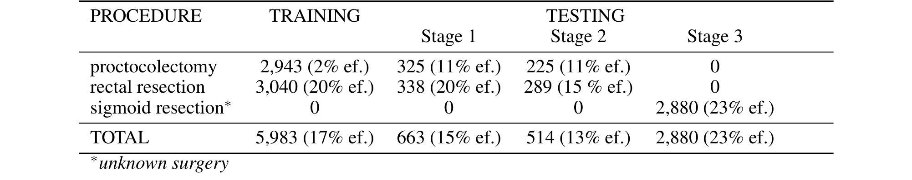
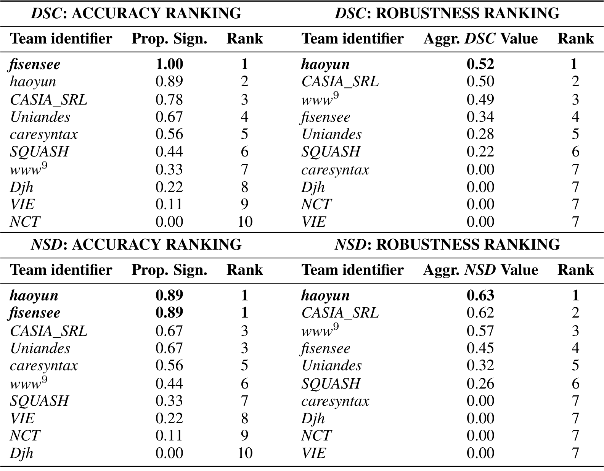
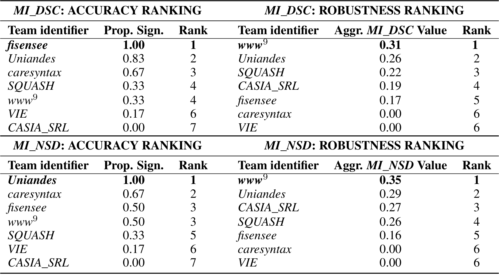
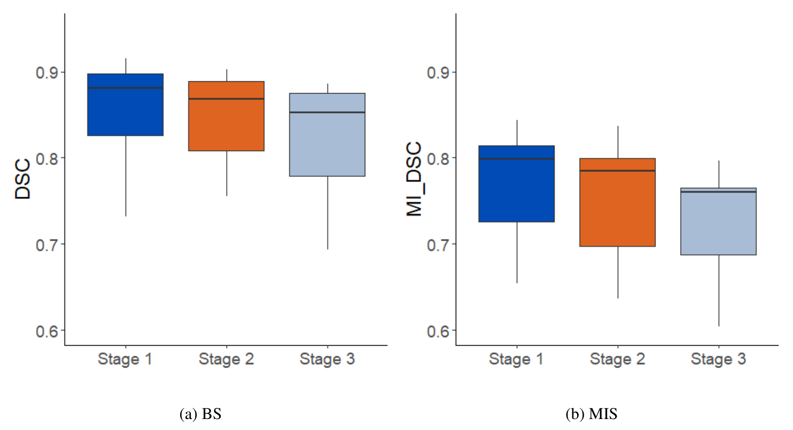
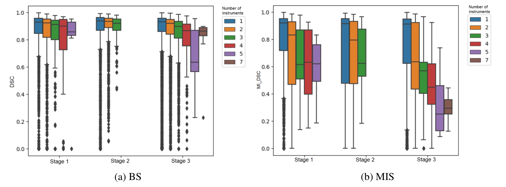
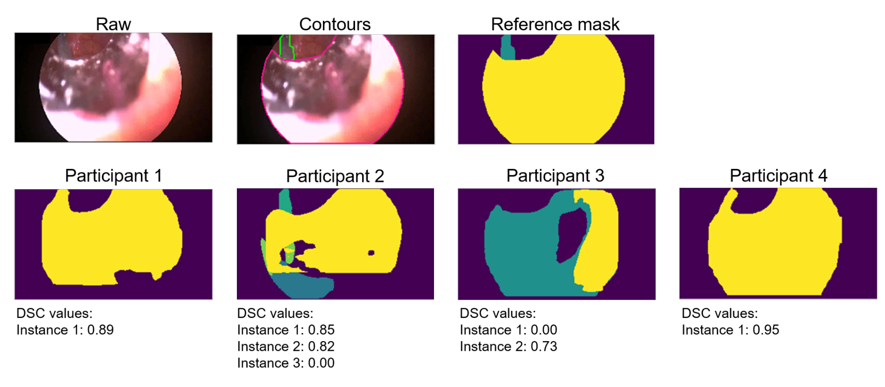
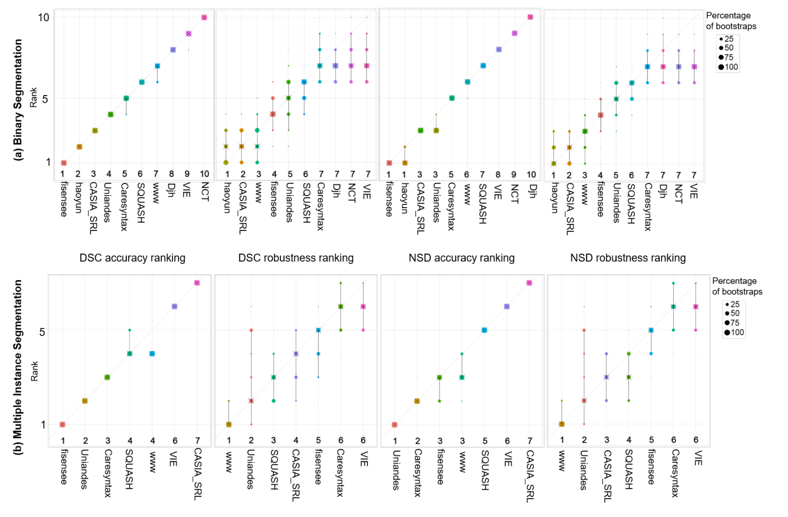

图文解读
1背景与动机
腹腔镜手术中，技能评估、增强现实等辅助功能都要先知道器械在哪里。商用追踪靠光学或电磁标记，需要额外硬件；只用视频做器械分割可以绕开硬件。
难点在于验证。各组用自己的数据报告结果，很难比较。EndoVis 系列挑战提供了公共基准，但以往器械数据只有约 500 到 4,000 帧，多为干净画面，测不出算法遇到血液、烟雾、运动伪影时会不会失败，也测不出换一批患者、换一种手术还能不能用。
ROBUST-MIS 2019 是 MICCAI 2019 的 EndoVis 子挑战，就是为补这两个缺口而设。
2核心观点速览
这是一份挑战结果报告：发布 30 台结直肠手术的 10,040 帧标注，用三项任务、三阶段测试和两种排名比较 10 支队伍。
- 数据：一家医院、三种术式各 10 台，经外包初标和医学背景团队复核。
- 评测：二值分割、多实例检测、多实例分割；测试分同患者、同术式新患者、新术式三阶段；排名分准确性与稳健性。
- 结果：二值分割平均 Dice 约 0.88，与以往冠军相当；检测指标几乎饱和；多实例分割在器械多于 3 把时冠军平均只有 0.45。
- 边界：三阶段只下降 3% 到 5%，且混有测试集构成差异；术式都属结直肠手术；失败模式是定性归纳。
3数据从哪里来
视频在海德堡大学医院的一体化手术室采集，相机和光源固定为同一套 Karl Storz 设备，分辨率从 1920×1080 下采样到 960×540。三种术式是直肠切除、全结直肠切除和乙状结肠切除，各 10 台。
抽帧先按 1 帧/秒得到 4,456 帧，再在手术阶段切换处补抽到 10,040 帧。超过一半的帧来自阶段切换附近，器械更换和多器械同框可能更常见（我的判断，论文没有给出两部分帧的对比）。

标注分四步：外包初标；组织者发现不一致后制定协议；14 名工程师和 4 名医学生复核全部标注，模糊情形由小组给出共识；医学专家质控，最后由一名医学专家和一名工程师裁定。实例编号只在单帧内有效，不跨帧一致。
4任务与三阶段划分
每个样本是 10 秒、250 帧的片段，只有末帧有标注。二值分割输出前景掩码；多实例分割用 1、2、… 区分实例；多实例检测只需粗略定位，提交格式相同。
划分规则：乙状结肠切除全部留给第 3 阶段；其余每种术式最短的 2 台给第 2 阶段；剩下 16 台中每第 10 个标注帧给第 1 阶段，其余为训练。

| 阶段 | 测什么 | 帧数 | 空帧 |
|---|---|---|---|
| 训练 | 5,983 | 17% | |
| 第 1 阶段 | 同患者 | 663 | 15% |
| 第 2 阶段 | 同术式新患者 | 514 | 13% |
| 第 3 阶段 | 新术式 | 2,880 | 23% |
三个阶段的样本量和空帧比例差别很大，这会影响后面对泛化下降的解读。任务说明写末帧至少含一把器械，表中却有空帧，空帧怎么计分论文未说明。
5指标与两种排名
二值任务用 Dice 系数（DSC，衡量重叠）和归一化表面 Dice（NSD，衡量边界在容差内是否重合）。容差 $\tau=13$ 取自 5 名标注者在 100 张图上的差异，单位论文未说明。
$$DSC(Y,\hat{Y})=\frac{2|Y\cap\hat{Y}|}{|Y|+|\hat{Y}|}$$
多实例任务先用匈牙利算法把预测实例与参考实例一一配对，逐对计算 DSC 或 NSD，再在图内对实例取平均，得到 MI_DSC 与 MI_NSD。漏掉的实例得 0 分。 检测任务用交并比大于 0.3 算命中，在全部图像上算平均精度均值（mAP）。
两种排名回答不同问题：
- 准确性排名：每对算法做单侧 Wilcoxon 检验（显著性水平 0.05），按显著胜出比例排序，问"平均谁更好"。
- 稳健性排名：取每个算法逐帧分数的 5% 分位数，问"最差的 5% 帧有多差"。
缺失结果记 0。测试数据不下发，参赛者提交 Docker 镜像，由组织者运行。
6结果说了什么

二值分割中，fisensee 拿下 DSC 准确性第一，haoyun 拿下 DSC 稳健性（0.52）和 NSD 两项排名。caresyntax、Djh、NCT、VIE 的 5% 分位数都是 0.00，即在至少 5% 的帧上完全失败；准确性第一的 fisensee 在稳健性上只排第 4。

多实例分割中，MI_DSC 准确性冠军是 fisensee，MI_NSD 准确性冠军是 Uniandes，两项稳健性冠军都是 www，分别只有 0.31 和 0.35。检测任务 6 支队伍的 mAP 在 0.94 到 1.00 之间，几乎没有区分度。

| 任务 | 第 1 阶段 | 第 2 阶段 | 第 3 阶段 |
|---|---|---|---|
| 二值分割 DSC 中位数 | 0.88 | 0.87 | 0.85 |
| 多实例分割 MI_DSC 中位数 | 0.80 | 0.78 | 0.76 |
作者称这证实了"性能随域差距下降"，下降约 3% 与 5%。但检测任务不支持这个结论：附录表 7 中 VIE 从第 1 阶段 0.750 升到第 3 阶段 0.978。
7多实例为什么难

准确性冠军的平均 MI_DSC 在 1、2、3、多于 3 把器械时分别是 0.82、0.71、0.62、0.45。二值分割几乎不受器械数影响。
图 2 中多实例分数成簇，作者指出这些簇对应不同器械数。一部分下降来自指标本身：两把器械漏掉一把，该帧就落在 0.5 附近（我的判断）。论文没有把检测召回和配对后的分割质量分开报告，所以分不清是"找不到"还是"分不准"。

作者查看最差和最好的 100 例后归纳：算法能处理反光、血液、不同光照；难在小、透明、相邻、交叉、遮挡、运动的器械和图像边缘。烟雾的说法前后矛盾：结果节列为难点，讨论节又说已稳健。
8结果没说什么
- 跨术式泛化的距离有限。 三种术式都是结直肠手术，作者自己说换到胆胰或上消化道手术可能下降更多。
- 阶段间下降的原因没分开。 三阶段帧数与空帧比例不同，阶段差异的检验或置信区间论文未说明。
- "训练流程比结构更重要"只是假设。 fisensee 同时用了 8 模型集成与大量增强，haoyun 用了预训练和 5 折交叉验证，没有受控对比。
- 视频信息的价值没有被证明或否定。 只有 3 支队伍用了视频，都没有获益；只有末帧有标注、实例编号不跨帧，也不利于时序模型（我的判断）。
9排名靠得住吗
图 4 用 1000 次自助抽样检验排名。准确性排名几乎不变；稳健性排名的区间明显更宽，作者解释为 5% 分位数本身不稳定。稳健性排名中相邻名次的差别不宜过度解读。

Docker 提交杜绝了测试集过拟合和人工标注测试集；5 支队伍首次提交失败后获准重交，组织者核对过网络参数没有改动。www 队用 EndoVis 2017 数据目视检查，被列为灰色地带。
10复现与复用
- 用官方评测代码，尤其是匈牙利匹配、缺失记 0、图内先平均的规则。
- 空帧计分和 NSD 容差单位论文未说明，复现前先查代码。
- 三阶段划分可直接借鉴到其他手术数据。
- 960×540 下采样对小器械有影响，作者认为较小。